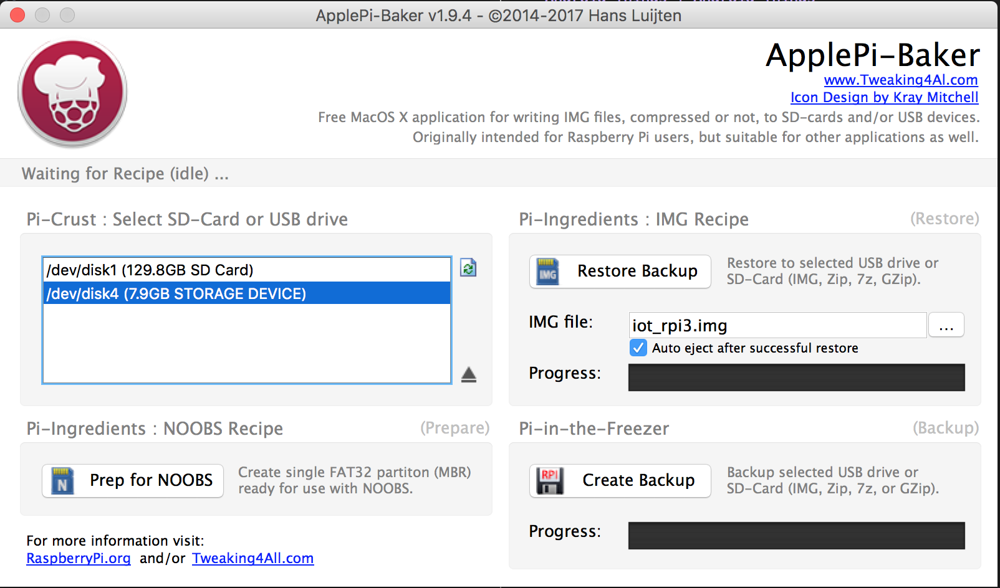
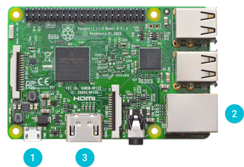
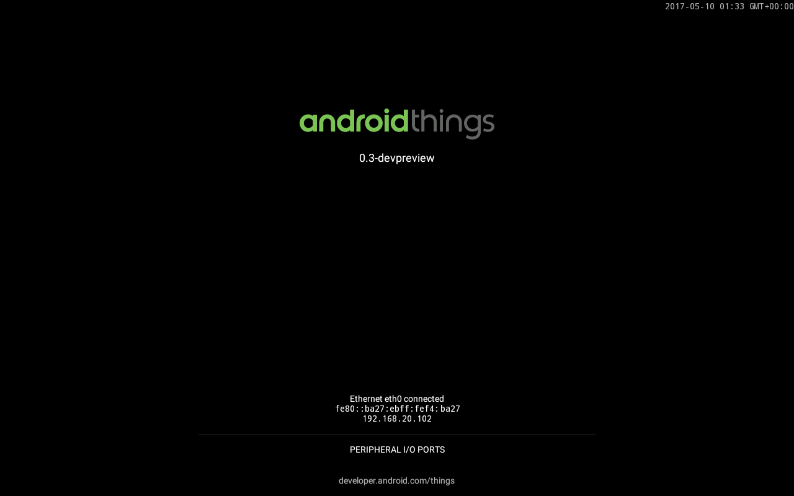

在 Android Things 學習筆記: 介紹 一文我們介紹了 Android Things ，在我們正式開始開發我們的程式之前，我們先將手邊的 Raspberry Pi 3 Model B 裝上可以用 Android Things 的映像檔案吧。
Android Things 的網頁有針對 Raspberry Pi 3 Model B 的 Getting Started 頁面，就讓我們從這一頁開始我們的 Android Things 旅程吧。
下載映像檔
首先到 System Image Downloads 去下載 Raspberry Pi 3 Model B 的映像檔案，接著將其解壓縮
coldnew@gentoo ~ $ unzip androidthings_rpi3_devpreview_3.zip
解壓縮後會得到 iot_rpi3.img 這個映像檔。
燒錄到 sdcard
如果你是在 Linux 下，可以直接透過 dd 命令將他寫到你的 sdcard
coldnew@gentoo ~ $ sudo dd if=iot_rpi3.img of=/dev/sdc bs=1M
在 Mac OSX 下，我則是透過 ApplePi Baker 這個圖形化的程式來進行燒錄

啟動 RPI3
將你燒好映像檔的 sdcard 插入到 Raspberry Pi 3 Model B 後，插入 USB 電源以及接上網路線，如果你有 HDMI 螢幕的話，可以考慮接上去 (不接也可以)

如果你有接上 HDMI 的話，開機完成後會看到這樣的畫面，上面會顯示你的 Raspberry Pi 3 的 IP 位址

連接 ADB
啟動完 Raspberry Pi 3 後，我們可以透過 adb 工具去進行連線，假設你的系統有支援 zeroconf (在 Linux 下是 Avahi, Windows 下是 Bonjour) 的話，你可以透過 Android.local 在同一網域下接觸到你的 Raspberry Pi 3
coldnew@gentoo ~ $ ping Android.local PING android.local (192.168.20.102): 56 data bytes 64 bytes from 192.168.20.102: icmp_seq=0 ttl=64 time=57.599 ms 64 bytes from 192.168.20.102: icmp_seq=1 ttl=64 time=4.529 ms ^C --- android.local ping statistics --- 2 packets transmitted, 2 packets received, 0.0% packet loss round-trip min/avg/max/stddev = 4.529/31.064/57.599/26.535 ms
於是我們就可以透過 adb 工具去進行連線
coldnew@gentoo ~ $ adb connect Android.local
你也可以登入進你的 Raspberry Pi 3 去看看裡面有啥東西
coldnew@gentoo ~ $ adb shell rpi3:/ $ ls acct d etc init init.usb.configfs.rc mnt property_contexts seapp_contexts storage ueventd.rpi3.rc cache data file_contexts.bin init.environ.rc init.usb.rc oem root selinux_version sys vendor charger default.prop fstab.rpi3 init.rc init.zygote32.rc postinstall sbin sepolicy system config dev gapps init.rpi3.rc lost+found proc sdcard service_contexts ueventd.rc
設定 Wi-Fi
當你登入你的 Raspberry Pi 後，如果你想拔掉網路線並起用 Raspberry Pi 3 上面的 Wi-Fi 的話，你可以透過 adb 去進行設定
coldnew@gentoo ~ $ adb shell am startservice \ -n com.google.wifisetup/.WifiSetupService \ -a WifiSetupService.Connect \ -e ssid <Network_SSID> \ -e passphrase <Network_Passcode>
(如果無線網路沒密碼的話，可以移除 passphrase 一行)
設定好後，可以透過 logcat 去進行驗證
coldnew@gentoo ~ $ adb logcat -d | grep Wifi ... V WifiWatcher: Network state changed to CONNECTED V WifiWatcher: SSID changed: ... I WifiConfigurator: Successfully connected to ...
也可以透過 ping 命令確認你的 Raspberry Pi 3 可以順利透過無線上網
coldnew@gentoo ~ $ adb shell ping 8.8.8.8 PING 8.8.8.8 (8.8.8.8) 56(84) bytes of data. 64 bytes from 8.8.8.8: icmp_seq=1 ttl=57 time=6.67 ms 64 bytes from 8.8.8.8: icmp_seq=2 ttl=57 time=55.5 ms 64 bytes from 8.8.8.8: icmp_seq=3 ttl=57 time=23.0 ms 64 bytes from 8.8.8.8: icmp_seq=4 ttl=57 time=245 ms
如果要移除所有的無線網路設定，則可以透過以下命令進行
coldnew@gentoo ~ $ adb shell am startservice \ -n com.google.wifisetup/.WifiSetupService \ -a WifiSetupService.Reset